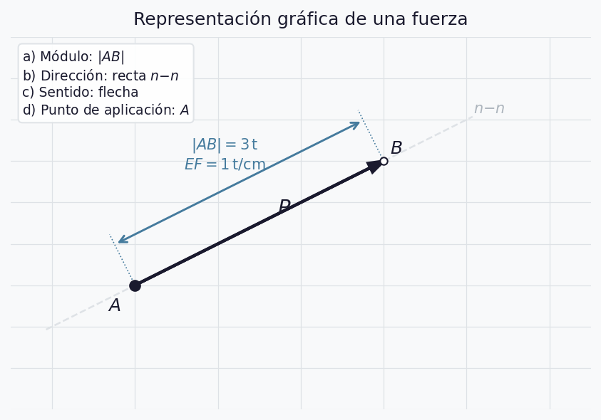
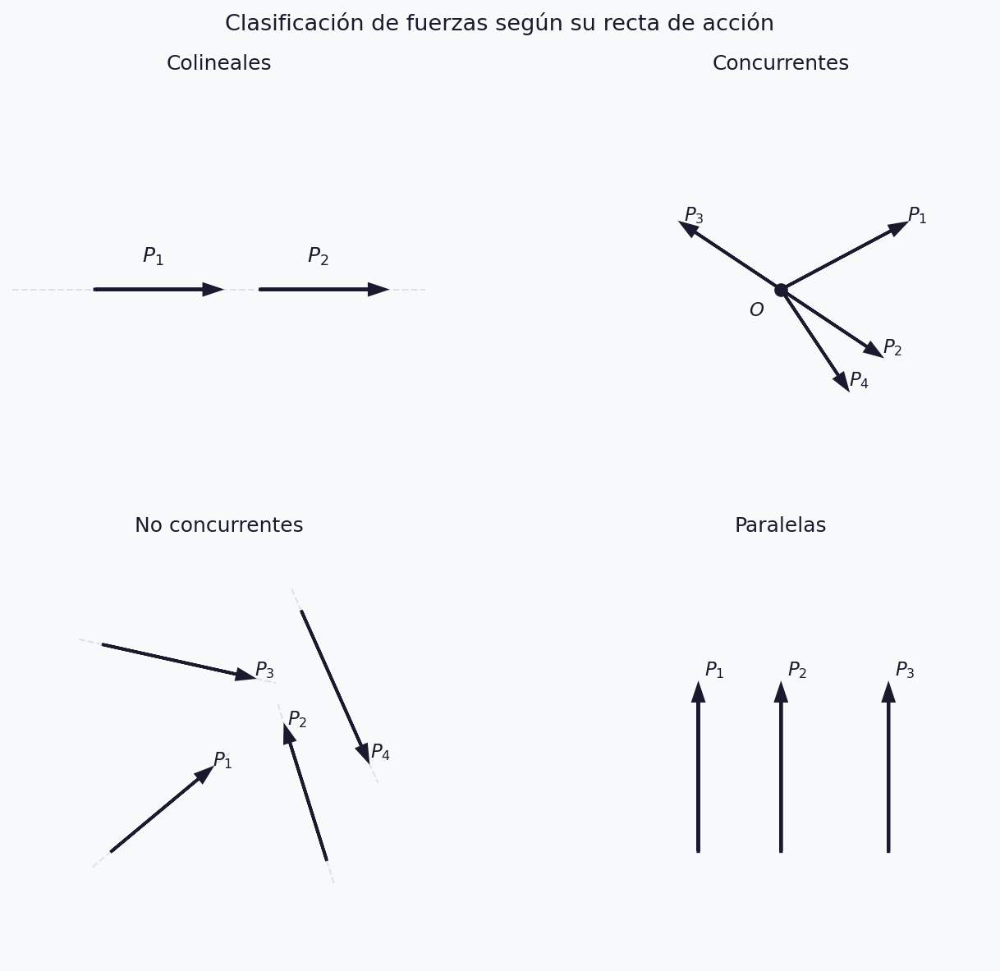
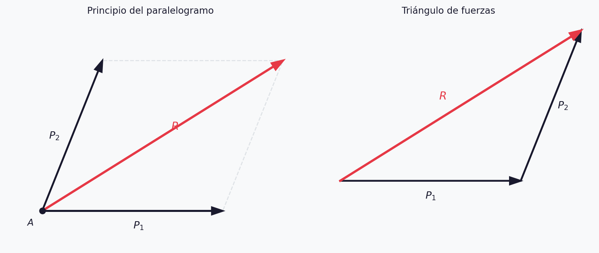
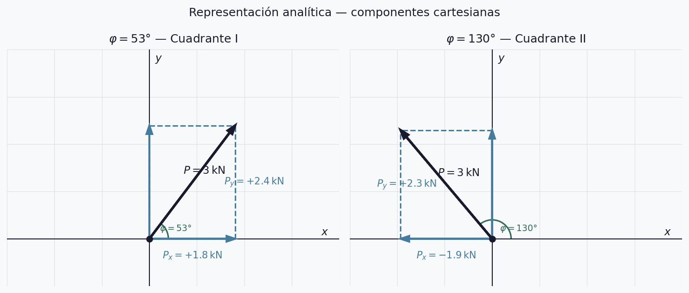
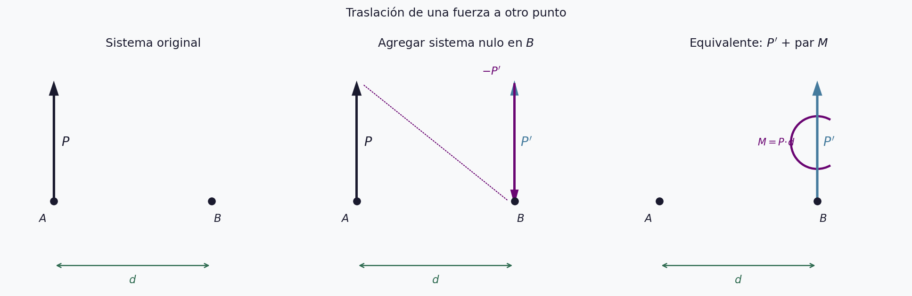
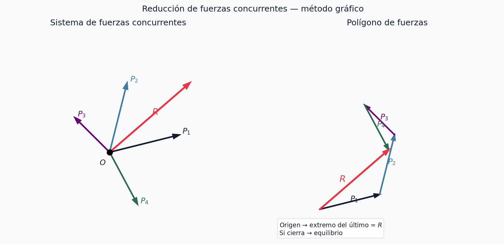
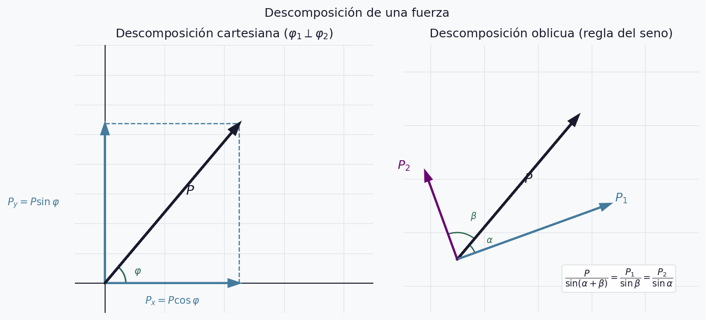
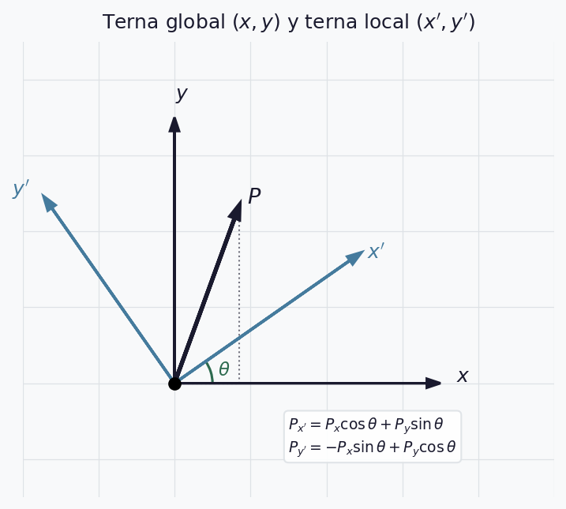
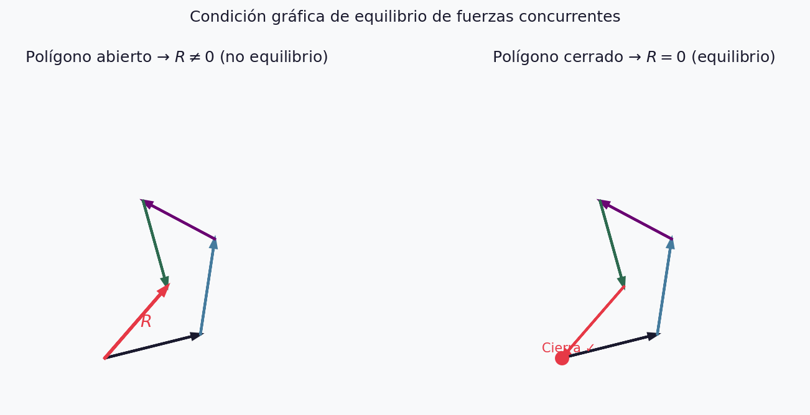

Fuerzas Concurrentes en el Plano
UT1 — Semana 1
2026-04-08
¿Qué estudia la Estática?
La Estática estudia las condiciones que deben cumplir las fuerzas que actúan sobre un sistema para que éste permanezca en estado de equilibrio.
Dos problemas centrales en todo sistema de fuerzas:
- Reducción — reemplazar el sistema por otro equivalente con el menor número de elementos
- Equilibrio — determinar las condiciones para que la resultante sea nula
Hipótesis de rigidez
El cuerpo rígido es un modelo ideal: bajo la acción de las fuerzas, la distancia y posición relativa entre las partículas que lo constituyen permanece invariable.
Consecuencias: - Una fuerza puede desplazarse sobre su recta de acción sin alterar su efecto - Válido para cuerpos con pequeñas deformaciones
Nota
Este modelo es la base de toda la UT1. En UT6 lo reemplazaremos por el cuerpo deformable.
Las cuatro características de una fuerza
| # | Característica | Descripción |
|---|---|---|
| a | Módulo | Intensidad según \(EF\) |
| b | Dirección | Recta de acción |
| c | Sentido | Flecha |
| d | Punto de aplicación | Letra \(A\) |

Advertencia
Dar solo la magnitud es una descripción incompleta.
Escala de fuerzas
\[EF = \frac{\text{fuerza (kN o t)}}{\text{longitud (cm)}}\]
Ejemplo: \(EF = 200\,\text{kN/cm}\), \(P = 800\,\text{kN}\)
\[x = \frac{800}{200} = 4\,\text{cm}\]
Advertencia
La \(EF\) es independiente de la escala geométrica del dibujo.
Clasificación según la recta de acción

Principios fundamentales de la Estática
- Paralelogramo: el efecto de dos fuerzas concurrentes es equivalente al de su resultante
- Deslizamiento: una fuerza puede desplazarse sobre su recta de acción sin alterar su efecto
- Sistema nulo: dos fuerzas iguales y de sentido contrario en la misma recta se equilibran
- Adición de sistema nulo: agregar o suprimir un sistema nulo no altera el equilibrio
- Resultante única: un sistema de fuerzas admite una única resultante
- Descomposición: una fuerza puede reemplazarse por componentes
- Acción y reacción: fuerzas de acción y reacción son iguales, colineales y opuestas
Principio del paralelogramo

Representación analítica — argumento \(\varphi\)
\[\boxed{P_x = P\cos\varphi} \qquad \boxed{P_y = P\sin\varphi}\]
\[|P| = \sqrt{P_x^2 + P_y^2} \qquad \tan\varphi = \frac{P_y}{P_x}\]
| Cuadrante | \(\varphi\) | \(P_x\) | \(P_y\) |
|---|---|---|---|
| I ↗ | \(0°\)–\(90°\) | \(+\) | \(+\) |
| II ↖ | \(90°\)–\(180°\) | \(-\) | \(+\) |
| III ↙ | \(180°\)–\(270°\) | \(-\) | \(-\) |
| IV ↘ | \(270°\)–\(360°\) | \(+\) | \(-\) |
Componentes cartesianas — ejemplos

Advertencia
Siempre dibujar los ejes y marcar \(\varphi\) antes de calcular. El \(\arctan\) devuelve valores en \((-90°,\,90°)\) — verificar cuadrante por signo de \(P_x\) y \(P_y\).
Momento estático de una fuerza
\[M = P \times d \quad [\text{kN·m}]\]
\(d\) = distancia normal entre \(O\) y la recta de acción (brazo de palanca)
Positivo cuando tiende a girar en sentido antihorario \((+\circlearrowleft)\)
\[M = 2 \times \text{Área}(\triangle OAB)\]
Momento estático — diagrama

Nota
El brazo \(d\) es siempre la distancia perpendicular entre \(O\) y la recta de acción, no la distancia entre \(O\) y el punto de aplicación \(A\).
Teorema de Varignon
\[M_R^O = \sum M_{P_i}^O \qquad R \cdot d_R = P_1 d_1 + P_2 d_2\]

Pares de fuerzas
\[M_{par} = P \times d\]
- Resultante nula → no produce traslación, solo rotación
- Libre: puede trasladarse y girar en el plano
- \(M = P_1 d_1 = P_2 d_2\) — invariante
- \(M_R = \sum M_i\)
Par de fuerzas — diagrama

Traslación de fuerzas
Para trasladar \(P\) del punto \(A\) al punto \(B\):
\[P \text{ en } A \equiv P' \text{ en } B + \text{par } M = P \cdot d\]

Reducción de fuerzas concurrentes — gráfico

Nota
Si el polígono cierra → resultante nula → sistema en equilibrio
Reducción de fuerzas concurrentes — analítico
a) Dos ecuaciones de proyección (más usada)
\[R_x = \sum P_i \cos\varphi_i \qquad R_y = \sum P_i \sin\varphi_i\]
\[|R| = \sqrt{R_x^2 + R_y^2} \qquad \tan\varphi_R = \frac{R_y}{R_x}\]
b) Una proyección + un momento
\[R_x = \sum P_i \cos\varphi_i \qquad M_R^O = \sum M_i^O\]
c) Dos momentos respecto a puntos no alineados con la concurrencia
Descomposición de fuerzas

Advertencia
Descomposición en 3 o más direcciones concurrentes → sistema indeterminado.
Terna global vs. terna local
\[P_{x'} = P_x\cos\theta + P_y\sin\theta \qquad P_{y'} = -P_x\sin\theta + P_y\cos\theta\]

Nota
El módulo de la fuerza no cambia al rotar la terna.
Equilibrio de fuerzas concurrentes
Condición gráfica: el polígono de fuerzas debe ser cerrado

Condición analítica: \[\sum P_i \cos\varphi_i = 0 \qquad \sum P_i \sin\varphi_i = 0\]
Práctica — Parte 1 (25 min)
Con \(EF = 100\,\text{kN/cm}\), representar gráficamente y calcular componentes:
| Fuerza | \(P\) (kN) | \(\varphi\) |
|---|---|---|
| \(P_1\) | 350 | 0° |
| \(P_2\) | 500 | 45° |
| \(P_3\) | 200 | 270° |
| \(P_4\) | 400 | 150° |
| \(P_5\) | 300 | 210° |
Verificar cada resultado reconstruyendo el módulo. Identificar cuadrante.
Solución Parte 1
| Fuerza | \(\varphi\) | \(P_x\) (kN) | \(P_y\) (kN) | Cuadrante |
|---|---|---|---|---|
| \(P_1\) | 0° | \(+350{,}0\) | \(0{,}0\) | eje \(x^+\) |
| \(P_2\) | 45° | \(+353{,}6\) | \(+353{,}6\) | I |
| \(P_3\) | 270° | \(0{,}0\) | \(-200{,}0\) | eje \(y^-\) |
| \(P_4\) | 150° | \(-346{,}4\) | \(+200{,}0\) | II |
| \(P_5\) | 210° | \(-259{,}8\) | \(-150{,}0\) | III |
Práctica — Parte 2 (25 min)
Problema 1 ★★☆
Componer las 5 fuerzas de la Parte 1 analítica y gráficamente.
Problema 2 ★★☆
\(P = 800\,\text{kN}\) a \(\varphi = 25°\). Descomponer en dos direcciones: una a \(10°\) respecto a \(P\) y otra a \(60°\) respecto a \(P\).
Problema 3 ★★★
Una terna local está rotada \(\theta = 35°\) respecto a la global.
\(P_x = 300\,\text{kN}\), \(P_y = -150\,\text{kN}\). Calcular componentes locales y verificar módulo.
Solución Parte 2
Problema 1: \[R_x = +97{,}4\,\text{kN} \qquad R_y = +203{,}6\,\text{kN}\] \[R = 225{,}8\,\text{kN} \qquad \varphi_R = 64{,}4°\]
Problema 3: \[P_{x'} = 159{,}7\,\text{kN} \qquad P_{y'} = -295{,}0\,\text{kN}\] \[|P'| \approx 335{,}5\,\text{kN} = \sqrt{300^2+150^2} \checkmark\]
Síntesis
- La hipótesis de rigidez permite deslizar fuerzas sobre su recta de acción
- Una fuerza necesita 4 características para quedar completamente definida
- La resultante se obtiene por polígono vectorial o \(\sum P_x\), \(\sum P_y\)
- El momento \(M = P \times d\) mide el efecto rotacional
- El par produce solo rotación; su resultante es nula
- La terna local rota el sistema de referencia; el módulo se conserva
- Equilibrio: \(\sum P_x = 0\) y \(\sum P_y = 0\)
Para el hogar
| # | Consigna | Nivel |
|---|---|---|
| 1 | Representar 4 fuerzas en distintos cuadrantes con \(EF\) libre | ★☆☆ |
| 2 | Componer 4 fuerzas por los tres métodos analíticos | ★★☆ |
| 3 | Descomponer una fuerza en dos direcciones oblicuas | ★★☆ |
| 4 | Terna rotada \(\theta = 50°\): calcular componentes locales de 3 fuerzas | ★★★ |
Tip
Instalar FTOOL antes de la Semana 3: https://webstructural.software/ftool/
Estabilidad / Estática y Resistencia · UT1 · Semana 1